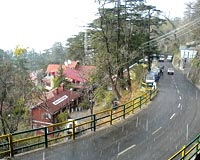

Accommodations
Facilities
Room Tarif
Special Packages



Nestled amidst north western Himalayas, Shimla is the capital city of the state of Himachal Pradesh. Dotted with oak, pine and rhododendron tress, Shimla was originally called Simla and served as the summer capital, during the British times. Owing to its natural and scenic beauty, it is even termed as the 'Queen of Hills' in India, a term coined by the British. This attributes to the fact that it is a popular tourist destination, adding a feather in the cap of the state, which is anyways a travel and tourism hub.
Shimla is named after the goddess Shyamala Devi, an incarnation of the Hindu Goddess Kali. There is even a temple dedicated to her in the city. The pleasant climate of the city is surely a respite from the otherwise scorching heat of the sun in summers. It experiences cool summers and snowy winters, which is a delight for the visitors here. Apart from the climate and natural surroundings, Shimla is even famous for its colonial architecture, wooden crafts and juicy apples.
The neo-gothic style of architecture takes you down the memory lane, reminding about the splendor of the by-gone era. Another fascinating fact about Shimla is that it is connected to the city of Kalkaji by one of the longest narrow gauge railway routes in India. It is even listed in the Guinness Book of Records as it experiences the steepest rise in altitude, in a distance of merely 96 km. Moreover, the ride in the toy train is considered one of the most beautiful and enjoyably ones, as it takes you across meandering pathways amidst lush green woods of the hills.
This is also one of the most preferred ways of reaching Shimla by the tourists, as it gives ample opportunities to cherish the unbound beauty of the terrain. The fresh mountain air and the spectacular views of the mountains are a treat for the senses. Besides, the Summer Festival held every year, is a huge hit amongst tourists. It is a 3 to 4 day event which is celebrated with great enthusiasm and zeal. The highlights of the festival include live performances by singers from across the country.